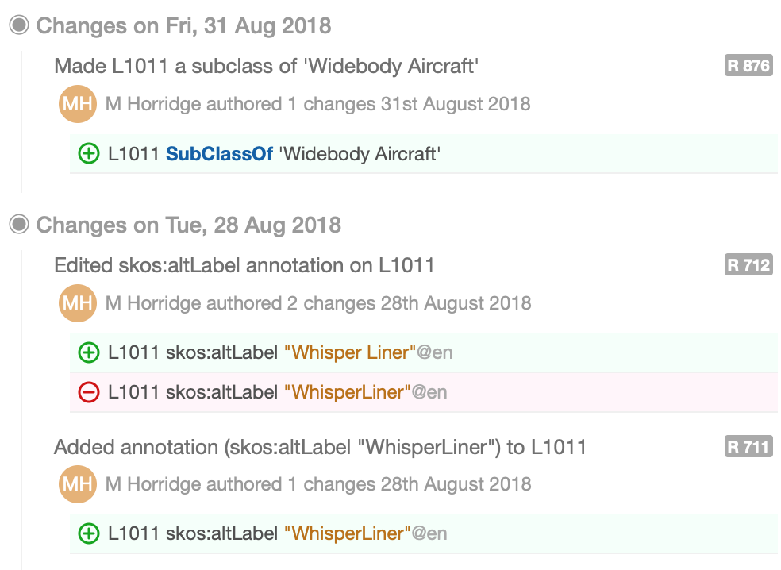

Publication of De-Identified Obfuscated WebProtégé Change History Logs for Research Purposes
Dear WebProtégé Project Owner,
We, the Protégé team, are contacting you with regards to the projects that you own on WebProtégé (https://webprotege.stanford.edu). As part of our research mission into ontology engineering we intend to produce a dataset of de-identified obfuscated change history logs that we will share with the ontology engineering research community. As a user of WebProtégé, and the owner of one or more projects, we wanted to let you know that we want to de-identify and obfuscate the change history of your projects and include them in this dataset. It is important for you to know that it will be impossible for users of the dataset to reconstruct the actual ontologies from your WebProtégé projects or obtain identifying information from any of the change logs.
The rest of this email provides you with some details about why we want to do this and illustrates what de-identified obfuscated change logs look like. It also provides you with the opportunity to say that you don’t want some, or all, of your projects to be included in this dataset, in any form. In other words, you have the opportunity to “opt out”. Of course, since actual usernames, timestamps and ontology content won’t be visible or identifiable in this dataset, we very much hope you’ll be onboard with this and won’t opt out.
As you may know, WebProtégé tracks the changes made to a project so that they can be reviewed and collaborators can see who did what and when they did it. The list of changes in a project is known as the project change history log. A portion of the change history for one of the Protégé team’s projects, Aero – ”An ontology of commercial aviation”, is show below. This portion included the changes for the class “L1011”.

As you can see, the plain change history records date/time, the user name of the author and the axioms additions and removals. According to the WebProtégé terms and conditions, this information is stored securely on the WebProtégé server and we would never release or publish plain change logs like this. However, we would like to publish de-identified obfuscated versions of change logs. How we get from a plain change log to a de-identified obfuscated change log is described below.
Taking the above plain change history log as an example, to de-identify and obfuscate it,
Therefore, the de-identified and obfuscated change history log:
The de-identified obfuscated change logs will be stored in JSON (JavaScript Object Notation) and will look similar to the formatted JSON below. Note that the formatted JSON below corresponds to the entries for the changes in the Aero log above. Notice that only the sequence, logical and structural aspect of the changes is preserved. There is no way to identify that the domain is commercial aviation and no way to identify usernames, or absolute dates and times of the original changes.
{
"rev" : 876,
"revisionType" : "AddedParent",
"offsetTime" : 153716695029,
"offsetTimeInDays" : 1779,
"userId" : "U1",
"changeCount" : 1,
"subjectsCount" : 1,
"highLevelSummary" : {
"revisionType" : "AddedParent",
"message" : "Added parent :nonuf-bajuk from :pirad-mudag",
"details" : {
"child" : ":pirad-mudag",
"parent" : ":nonuf-bajuk"
}
},
"subjects" : [ ":pirad-mudag" ],
"changes" : [ {
"operation" : "ADD",
"axiom" : "SubClassOf(:pirad-mudag :nonuf-bajuk)",
"axiomType" : "SubClassOf"
} ]
}
{
"rev" : 711,
"revisionType" : "AddedAnnotation",
"offsetTime" : 153453257380,
"offsetTimeInDays" : 1776,
"userId" : "U1",
"changeCount" : 1,
"subjectsCount" : 1,
"highLevelSummary" : {
"revisionType" : "AddedAnnotation",
"message" : "Added annotation (:luguv-lajuv \"2f904bf863792898c7297a0272e9d0407ba678d699c24eea75669f2c3d4b7e7f\") to :pirad-mudag",
"details" : {
"subject" : ":pirad-mudag",
"property" : ":luguv-lajuv",
"value" : "\"2f904bf863792898c7297a0272e9d0407ba678d699c24eea75669f2c3d4b7e7f\""
}
},
"subjects" : [ ":pirad-mudag" ],
"changes" : [ {
"operation" : "ADD",
"axiom" : "AnnotationAssertion(:luguv-lajuv :pirad-mudag \"2f904bf863792898c7297a0272e9d0407ba678d699c24eea75669f2c3d4b7e7f\"@L0)",
"axiomType" : "AnnotationAssertion"
} ]
}
While there are many ontologies that are published online, the change histories for ontology projects are not usually available. This hampers researchers that are interested in ontology engineering research areas such as ontology evolution, ontology versioning, incremental reasoner development and optimisation, and query engine optimisation. Many of these research areas do not require actual identifying domain details that are pertinent to an ontology project, they only require logical and structural changes. Thus, having de-identified obfuscated change logs may be of great benefit to the field of ontology engineering research. Even though the logs that we will publish are generated by and specific to WebProtégé, we believe that general enough conclusions could be drawn from research into these logs so that it will be possible to make novel tool workflow and performance improvements.
We will publish the dataset online. It is likely to be published so that it is available from a sub-domain of https://protege.stanford.edu. This means that anyone will be able to access the dataset.
We cannot say for definite because this depends on the number of people who opt out. However, if nobody were to opt out we would expect the dataset to contain around 30,000 de-identified obfuscated change logs.
Since the dataset will be published online it will be available to anyone. However, we would expect that this dataset is only of interest to researchers who want to use the data for studying the structural aspects of ontology changes.
If you are happy for de-identified obfuscated versions of your project history to appear in this dataset then you do not need to do anything. If you would like to opt out please use this link and follow the instructions.